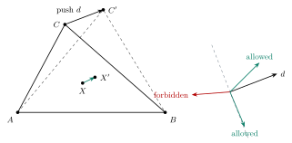
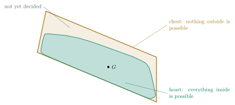
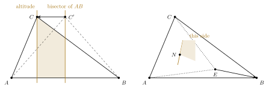
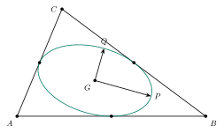
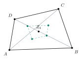
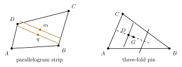
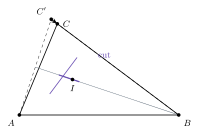
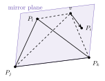
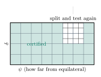
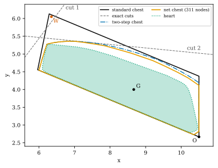

The Attractive Centers Explorer
A guide to every picture, switch, number and algorithm
https://ismaa3iil.fyi/attractive-centers/explorer/
How to use this guide. Section 1 explains the idea in one page. Section 2 explains the controls. Sections 4–6 go through the three tabs, checkbox by checkbox. Section 7 explains the algorithms. Section 8 says what is proved and what is only computed. A glossary and a list of frequent questions are at the end. Formulas can be skipped on a first reading; every section starts in plain words.
1. The idea in one page
A center is a rule that assigns one point to every triangle (or to every four points), in a way that does not depend on where the figure is, how large it is, how it is turned, or how its points are named. The centroid is a center. So is the incenter.
A center is attractive if it never moves against a push: when one vertex is moved in some direction, the center may follow, may move sideways, or may stay, but it never moves backwards (Figure 1).

Now fix one triangle and ask: where can the center of an attractive rule be? The explorer draws two answers.
- The chest (gold): a region that is proved to contain the center of every attractive rule. Nothing outside the chest is possible.
- The heart (green): a region every point of which is the center of some attractive rule that has been constructed and verified. Everything inside the heart is possible.
The truth lies in between (Figure 2). The research aim is to make the chest smaller and the heart larger until they meet.

Three numbers to remember for the 13–20–21 triangle (percent of the triangle's area): standard chest 5.93; best chest computed so far about 4.9; certified heart 3.99.
2. Using the explorer
Tabs.
Triangle, Four planar points, Tetrahedron. Each has its own examples, checkboxes and table.
Moving points.
Drag a vertex with the mouse. Scroll to zoom; drag empty space to pan (in the tetrahedron tab, to rotate). Exact coordinates can be typed under Vertex coordinates. Example loads a prepared configuration, Reset restores the default, Fit view shows the whole figure, Focus hearts zooms to the small inner regions.
Checkboxes.
Each checkbox is one layer: a region or a set of points. Green layers are hearts, the others are chests or comparison layers. Switching a layer on or off never moves the vertices. Hovering over a displayed center shows its name.
The table.
For each visible layer: the number of corners (vertices) of the region and its size as a percentage of the triangle (area) or of the tetrahedron (volume). A smaller chest is a stronger statement. A larger heart is a stronger statement. The two percentages answer opposite questions and are never added.
The status line
under the picture says how many corners the latest heart has and reports numerical failures (for instance a power center that did not converge is left out and counted).
Symmetric examples.
For an equilateral triangle, a parallelogram or a regular tetrahedron every center is forced onto the centre of symmetry, so both regions shrink to a point. For an isosceles triangle they shrink to a segment on the axis. Zero area does not mean “empty”.
3. Concepts and definitions
3.1 Centers
A triangle center can always be written as a weighted mean of the vertices,
Z = wAA + wBB + wCC, wA + wB + wC = 1,
where the weights depend only on the shape of the triangle (for instance on the side lengths a = |BC|, b = |CA|, c = |AB|).
| center | weights (wA : wB : wC) | attractive? |
|---|---|---|
| centroid G = X(2) | 1 : 1 : 1 | yes; a push d moves it by d/3 |
| incenter X(1) | a : b : c | yes |
| Spieker center X(10) | b + c : c + a : a + b | yes |
| orthocenter X(4) | tan A : tan B : tan C | no |
The codes X(n) are those of the Encyclopedia of Triangle Centers.
Example: the orthocenter is not attractive. Take B = (−1, 0), C = (1, 0), A = (x, h). The orthocenter is H = (x, (1 − x²)/h). Push A straight up (increase h): H moves straight down. The push and the response point in opposite directions.
3.2 Attractive and monotone
Two versions of the definition are used.
- Finite version (monotone). For every move of one point by a vector d, with the center going from X to X′: d · (X′ − X) ≥ 0. This compares two configurations and needs no smoothness.
- Local version (attractive). The rule is smooth and, for each vertex, the 2 × 2 matrix J of partial derivatives of the center with respect to that vertex satisfies Sym J = ½(J + JT) ⪰ 0 (no negative eigenvalue).
For smooth rules the two are equivalent: the finite version is the integral of the local one along the path of the vertex. Chests are derived from the finite version. Hearts are built by checking the local version.
3.3 Heart, chest, and the two extreme objects
- A chest of a configuration is a region proved to contain the center of every attractive rule. The intersection of two chests is a chest.
- A heart is a region every point of which is the center of some verified attractive rule. If Z1 and Z2 are attractive, so is every fixed mixture tZ1 + (1 − t)Z2, 0 ≤ t ≤ 1. Therefore the convex hull of the centers of finitely many verified rules is a heart. This is how every green region of the explorer is produced.
- The maximal heart is the set of all centers of attractive rules. The minimal chest is the intersection of all chests obtainable from finitely many inequalities. The maximal heart lies inside the minimal chest. Whether they coincide is the main open question.
3.4 How a chest inequality is obtained
Every chest comes from one principle, used over and over.
Transport. If a point is moved by d and the center of the starting configuration is known to lie in a region K, then the center X′ of the final configuration satisfies d · X′ ≥ minz ∈ K d · z.
It is useful when the starting configuration is symmetric, because symmetry tells where its center is: on the axis of an isosceles triangle, at the centre of an equilateral triangle or of a parallelogram. Several points may be moved one after another along the same direction; the inequalities then add up. This is called a pin with parallel displacement.
4. The Triangle tab
4.1 The standard chest (gold)
It is the intersection of three things: the triangle itself, three strips, and the Napoleon triangle.

Strips
(checkbox Characteristic strips). For each side there is one strip, bounded by the perpendicular bisector of the side and the parallel line through the opposite vertex (the altitude). Three sides give three strips.
Napoleon triangle
(checkbox Internal Napoleon triangle). On each side build the equilateral triangle that lies on the same side as the opposite vertex; take the three centres NA, NB, NC. Each gives one half-plane as in Figure 3; the three half-planes form a triangle whose side midpoints are NA, NB, NC.
Example (13–20–21). The nine inequalities are 5 ≤ x ≤ 21/2, 0 ≤ 4x − 3y ≤ 34, 169/2 ≤ 5x + 12y ≤ 105 and three Napoleon half-planes. Only four of them matter. The chest is the quadrilateral with corners (10.5, 2.667) (the circumcenter), (10.5, 4.375), (6.288, 6.130), (5.964, 4.557) and area 5.930% of the triangle.
4.2 The hearts (green and comparison layers)
Each heart layer is the convex hull of the centers of a list of verified attractive rules. Later layers contain the earlier ones. Table 1 lists them in the order of the checkboxes.
Table 1. Layers of the Triangle tab.
| checkbox | what it shows | status |
|---|---|---|
| Standard chest | the outer bound of Section 4.1 | proved |
| Latest heart | hull of all rules below, 1176 in total | see rows below |
| Previous heart · before Steiner maps | the heart as of October 2026 (467 rules) | certified |
| Certified Steiner-frame maps alone | 709 polynomial rules built on the Steiner inellipse (Section 4.3) | interval certificate |
| Previous bridge + rays heart | B46, constant families, shape maps, rays, bridge | exact certificates |
| Centroid-insertion polynomial maps | 12 rules obtained from four-point rules by inserting the centroid | proved |
| Repaired conic-bridge enlargement | adds a continuous one-parameter family between two exact endpoints (129 samples) | exact |
| Previous six-ray heart (R1–R6) | adds six rules found on six rays from G | exact |
| New maps R7–R10 and P1–P3 alone | seven further rules | exact |
| First shape-dependent enlargement | four rules whose weights depend on the shape number q | exact |
| B46 + constant families | adds all rules G + fK + gHK with constant f, g | exact |
| B46 heart | 44 rational rules G + λ(X(i) − G) and two power centers | exact |
| Six new maps R1–R6 alone | the six rules by themselves | exact |
| Historical B36 comparison | an earlier list of 36 rules | exact |
| Earlier sampled power-family hull | incenter, Spieker center, centroid and 49 power centers | theorem + sampling |
| Characteristic strips | the three strips alone | proved |
| Internal Napoleon triangle | the Napoleon triangle alone | proved |
| Show exposed center points | dots at the rules that are corners of the heart | display |
Power centers.
Mp is the point that minimises the sum of the p-th powers of the distances to the vertices. For p = 2 it is the centroid. A theorem of the project says that Mp is attractive for 4 − 2√2 ≤ p ≤ 4 + 2√2 (about 1.17 to 6.83), for any number of points in any dimension.
Rational rules (B46).
For a center X(i) and a number λ, the rule G + λ (X(i) − G) lies on the line through the centroid and X(i). For 44 choices the rule is certified attractive; together with the two extreme power centers they form B46.
Shape-dependent weighted means.
Put si = ai²/(a² + b² + c²) and
q = ½(3 ∑ si² − 1), χ = 36 ∑ (si − ⅓)³ .
Both are 0 for an equilateral triangle; q measures how far the triangle is from equilateral and χ distinguishes shapes with the same q. The rules of this family have weights
wi = ⅓ + (f + 4g)(si − ⅓) − 6g (si² − ⅓ ∑ sj²), (1)
where f and g are simple functions of q and χ: constants (constant families), f0 + f1q (first shape maps and rays), with a term in χ (P1–P3), or polynomials of higher degree (Steiner maps). The conic bridge is a curve of such rules.
4.3 The Steiner-frame maps
The Steiner inellipse is the ellipse inside the triangle that touches the three sides at their midpoints. Its centre is G; let GP and GQ be its longer and shorter semi-axes (Figure 4).

A first idea is to take Z = G + x · GP + y · GQ with fixed numbers x, y. This does not give attractive rules: near an equilateral triangle the axes of the ellipse turn violently when a vertex moves a little, and the center is thrown backwards. The rules that work are
Z = G + X cos 3θ · GP + Y sin 3θ · GQ,
where X and Y depend on the shape and vanish for the equilateral triangle. Written as weighted means they are exactly of the form (1), with f and g polynomials in q and χ. The explorer contains 709 of them. They were designed by a computer search and then certified one by one (Section 7).
Example. With the Steiner maps the heart of 13–20–21 grew from 2.81% to 3.99% of the triangle, and the heart of the 6–5–3 triangle from 12.95% to 18.42%.
5. The Four planar points tab
Here a rule assigns a center to four points A, B, C, D of the plane, in the same symmetric way.
5.1 Hearts
Table 2. Heart layers of the Four planar points tab.
| checkbox | what it shows | status |
|---|---|---|
| Latest planar four-point heart | hull of everything below | see rows |
| Previous heart · before face means | the heart as of October 2026 | certified |
| Face means of triangle centers alone | for each certified triangle rule, the average of its centers in the four triangles BCD, ACD, ABD, ABC | proved; one check numerical |
| Previous vertex-power heart | 49 power centers of the four points | theorem + sampling |
| Barycentric-anchor family alone | power centers of 14 points: the 4 points, 6 midpoints, 4 triangle centroids, with fixed masses | theorem + sampling |
| Ten SOS-certified polynomial maps | ten explicit polynomial rules | exact (sums of squares) |
| Conservative shape-modulated maps | two rules G ± q̃U1/24 | proved (norm bound) |
| Analytic subheart | the even powers p = 2, 4, 6 and the polynomial rules | as above |
| Refine anchor sampling (slower) | uses 2835 instead of 495 anchor mixtures | display |
Face means.
If Z is an attractive triangle rule, then
Z4(A, B, C, D) = ¼ [Z(BCD) + Z(ACD) + Z(ABD) + Z(ABC)]
is an attractive four-point rule: when A moves, three of the four terms respond, each without going backwards, and the fourth does not move (Figure 5). No new proof is needed for each rule; this is why 1176 triangle rules immediately give 1176 four-point rules.

5.2 Chests
All checked chest layers are intersected; the result is the layer Show intersection.
Table 3. Chest layers of the Four planar points tab.
| checkbox | idea | status |
|---|---|---|
| Parallelogram strips | slide two points until the four form a parallelogram; its center is its centre | proved |
| Useful bisectors | mirror-symmetric predecessor about the bisector of a pair | proved |
| Two-order network | start from an equilateral triangle with its centre, move the other points in both orders, keep the intermediate centers as unknowns | proved |
| Involution orbit bounds | further reflections and point reflections | proved |
| Edge-projection slabs | make a pair mirror images and put the other two points on the axis | proved |
| Face-centroid transfer | if D is the centroid of ABC, the triangle chest of ABC applies; otherwise a bound in the direction D − G | proved |
| Three-fold pins + moved-vertex transfer | new, Figure 6 | proved |
| Two-step cuts (fast scan) | new, Figure 7 | proved rule, numerical scan |
| Refine two-step scan (slower) | a finer scan; it can only shrink the chest | as above |
| Diameter balls (power family) | valid for power centers only | conditional |
| Absorption (conditional) | assumes X4(A, B, C, X3(ABC)) = X3(ABC) | conditional |
| Standard chest of A, B, C | shown for comparison only; not a four-point chest in general | display |


Example. For A, B, C of 13–20–21 and D its incenter, the chest intersection was 7.37% of the triangle before the new rules, 6.10% with the pins, and 5.69% with the two-step cuts. The heart grew from 0.57% to 0.92%.
6. The Tetrahedron tab
The same questions for four points in space. Regions are polyhedra and percentages are volumes.
Hearts.
The layers are those of the four-point tab, in space: vertex-power centers, barycentric anchors, ten SOS-certified polynomial rules, two modulated rules, and face means. For a face mean, a triangle rule is evaluated in the plane of each of the four faces and the four points are averaged. Why this is attractive in space: if a vertex moves inside the plane of a face, the face center responds as in the plane; if it moves perpendicular to the face, no side length changes at first order, so the face center simply follows with the factor wi, its barycentric weight, which is not negative.
Chests.
Table 4 lists the chest layers; the checked ones are intersected.
Table 4. Chest layers of the Tetrahedron tab.
| checkbox | idea | status |
|---|---|---|
| Opposite-edge slabs | slide two opposite edges until their midpoints coincide (a flat parallelogram) | proved |
| Useful bisector planes | mirror-symmetric predecessor | proved |
| Involution orbit bounds | further reflections | proved |
| Edge-projection slabs | two vertices mirror images, the other two in the mirror plane | proved |
| Face-centroid transfer | bound in the direction from a face centroid to the opposite vertex | proved |
| Axis pins | a face is slid in its plane to an equilateral triangle whose axis passes through the fourth vertex; the center is then on that axis | proved |
| Median pins | all vertices are slid along a median to a flat equilateral triangle with its centre | proved |
| Moved-vertex transfer | as in the plane, along a median | proved |
| Two-step cuts | a vertex is first put at a position that makes the tetrahedron mirror-symmetric (Figure 8) | proved rule, numerical scan |
| Diameter balls (power family) | valid for power centers only | conditional |

Example. For the Bundle tetrahedron preset the chest was 10.26% of the tetrahedron before the new rules and is 7.11% with the two-step cuts (6.59% refined); the heart grew from 0.024% to 0.099%. In space the heart and the chest are still very far apart.
Reading the 3D picture.
Drag empty space to rotate; Focus hearts zooms to the small green polyhedron; Show selected 3D chest can be switched off to see the heart alone.
7. The algorithms
7.1 What happens while you drag
For every new position the browser recomputes, on your own computer:
- the centers of all rules of the active tab (weighted means are evaluated by formula; power centers by Newton's method with a convergence check);
- the convex hull of these centers (the heart);
- the chest: every rule produces straight cuts (half-planes or half-spaces); the hull of the input points is clipped by each cut in turn;
- the areas or volumes for the table.
Nothing is proved while you drag. The browser evaluates rules and inequalities whose validity was established beforehand; Section 8 says how.
7.2 Two-step scans
For each of the four points the scan tries a list of trial positions: special points (mirror images, apexes and centres of equilateral triangles, positions that make a point a centroid), points on the curves where three points form an isosceles triangle, and a grid. For each trial position it builds the one-step chest of the intermediate configuration, computes the cut, and keeps it if it removes something. Two facts keep this fast and safe.
- Every cut is valid, so a coarse scan gives a correct chest that is merely a little larger.
- A quick test discards hopeless positions: the centroid of the four points lies in every chest; if even the centroid of the intermediate configuration would not produce a cut, nothing will.
In space the trial positions make the intermediate tetrahedron mirror-symmetric, so its chest is a polygon in the mirror plane and the computation is two-dimensional.
7.3 How a new rule is designed
For the weighted means (1) the matrix Sym J depends linearly on the coefficients of f and g. Therefore the question “which coefficients push the center of this triangle farthest in this direction, while Sym J stays positive at these ten thousand sample shapes?” is a linear programme, a standard optimisation problem. It is solved for many target triangles and directions. The answers are candidates only: the positivity was imposed at sample shapes, not everywhere.
7.4 How a rule is certified
Three kinds of proof are used.
- Exact polynomial certificates. After clearing denominators, positivity of Sym J becomes the statement that a polynomial is a sum of squares. The identity is checked with exact rational arithmetic. Used for B46, the rays, the bridge and the ten four-point polynomial rules.
- Norm bounds. The rule is G plus a small perturbation whose derivative is bounded by an explicit estimate smaller than the response 1/n of the centroid. Used for the modulated rules.
- Interval certificates. All triangle shapes are described by two numbers (ψ, δ) in a rectangle. The rectangle is cut into boxes (Figure 9). On each box the computer evaluates Sym J with interval arithmetic: every operation returns an interval guaranteed to contain the true result, rounding outwards. If the lower bounds of the first entry and of the determinant are positive, the box is done; otherwise it is split in four. When every box is done, the rule is attractive for every triangle. Used for the 709 Steiner maps: about 100 million boxes in all.

7.5 Sharper chests outside the app
The chest drawn for triangles is the standard one. Offline computations give smaller chests for the 13–20–21 triangle (Figure 10).
- Two steps. Using an isosceles triangle as an intermediate stop gives further cuts. One of them, 4x − 3y ≥ (21/2)(√3 − 1), is proved exactly and already shows that the standard chest is not best possible. All two-step cuts together give about 5.04%.
- Nets. A net is a finite collection of triangle shapes with one unknown center for each, tied together by all transport inequalities between them. Solving this system (a linear programme) gives 4.89% with 311 shapes. These values are numerical.

8. What is proved and what is computed
| statement | status |
|---|---|
| the standard chest contains every attractive triangle center | proved |
| every listed rule of B46, the rays, the bridge, the four-point polynomial rules | proved by exact certificates |
| the 709 Steiner maps are attractive | computer-assisted proof (interval arithmetic); assumes the system sine and cosine are accurate to 10−12 |
| convex hull of verified centers is a heart | proved |
| face means are attractive (no three points collinear) | proved |
| face means across collinear positions | needs a limit property of each triangle rule; checked numerically for all 1176 |
| pins, transfer, two-step cuts are valid | proved (for rules that are monotone along every straight move without collision) |
| positions, areas, volumes shown in the app | floating-point evaluation |
| two-step chest 5.04%, net chest 4.89% (13–20–21) | numerical |
| the heart equals the chest | open |
None of the project's own proofs has been refereed by a journal.
9. Glossary
- Absorption
- An optional extra assumption linking four-point and triangle rules. Not part of attractivity.
- Anchor
- A centroid of some of the points (a vertex, an edge midpoint, a face centroid) used as a virtual input.
- Attractive
- Smooth and never moving against a push: Sym J ⪰ 0 for every vertex.
- Barycentric weights
- The numbers wi with Z = ∑ wivi, ∑ wi = 1.
- Center
- A rule assigning a point to every configuration, independent of position, size, orientation and labelling.
- Certificate
- A finite, checkable record proving that a rule is attractive.
- Chest
- A region proved to contain the center of every attractive rule.
- Conditional layer
- A bound that holds only under an extra assumption or only for one family.
- Convex hull
- The smallest convex region containing given points.
- Cut
- One straight inequality removing part of a chest.
- Face mean
- The average of a triangle rule over the four triangles formed by four points.
- Heart
- A region each point of which is the center of a verified attractive rule.
- Level
- Level 1 uses one move from a symmetric configuration; level 2 uses a further move; and so on.
- Maximal heart, minimal chest
- The largest heart and the smallest chest; whether they are equal is open.
- Monotone
- The finite form of attractivity, d · (X′ − X) ≥ 0; needs no smoothness.
- Net
- A finite set of configurations with unknown centers, tied by all transport inequalities.
- Pin
- A chest rule that slides points along one direction from a symmetric configuration.
- Power center Mp
- The minimiser of the sum of p-th powers of distances to the points.
- Slab, strip
- The region between two parallel planes or lines.
- Steiner inellipse
- The ellipse touching the three sides of a triangle at their midpoints.
- Transport
- The basic inequality of Section 3.4.
10. Frequent questions
Why is the heart so much smaller than the chest for four points?
The chest rules for four points are still weak, and so are the known four-point rules. For triangles the two are much closer.
Is a point of the white band possible or not?
Unknown. That is exactly the open region.
Why does a layer sometimes have zero area?
The configuration is symmetric and the region has collapsed to a segment or a point.
Can the heart ever leave the chest?
No. A regression test checks, for many configurations, that every certified center lies in every chest.
Why are some chest options labelled “conditional”?
They hold only under an extra assumption (absorption) or only for one family (power centers). The intersection is called “unconditional” only when they are off.
Does the refined scan change the mathematics?
No. It tries more trial positions, so it finds more valid cuts; the chest can only shrink.
11. Further reading and downloads
- Chests and Hearts of Attractive Triangle Centers: formal framework, roadmap, the chests of
13–20–21 step by step, and the Steiner method (PDF, in the explorer's
docsfolder): Chests and Hearts of Attractive Triangle Centers — formal framework, roadmap, worked computations. - A Calculus of Chests and Hearts: the general operations with proofs (PDF, same folder): A Calculus of Chests and Hearts — the general operations with proofs.
- The explorer's in-page guide: formulas, coefficient tables, proof bundles and test files.
- This guide: This guide as PDF.